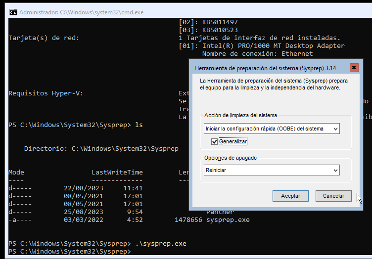
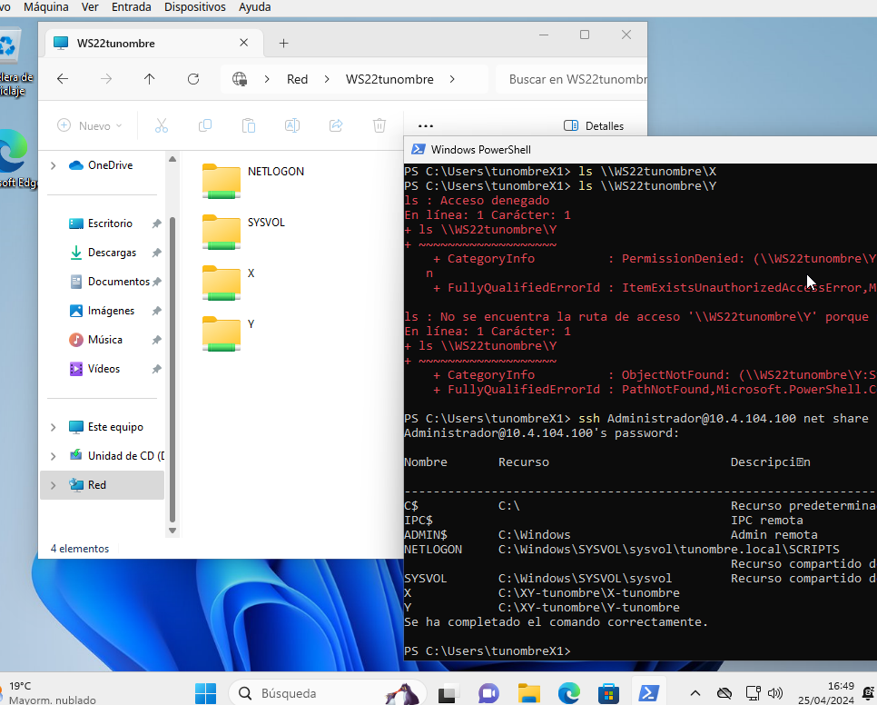
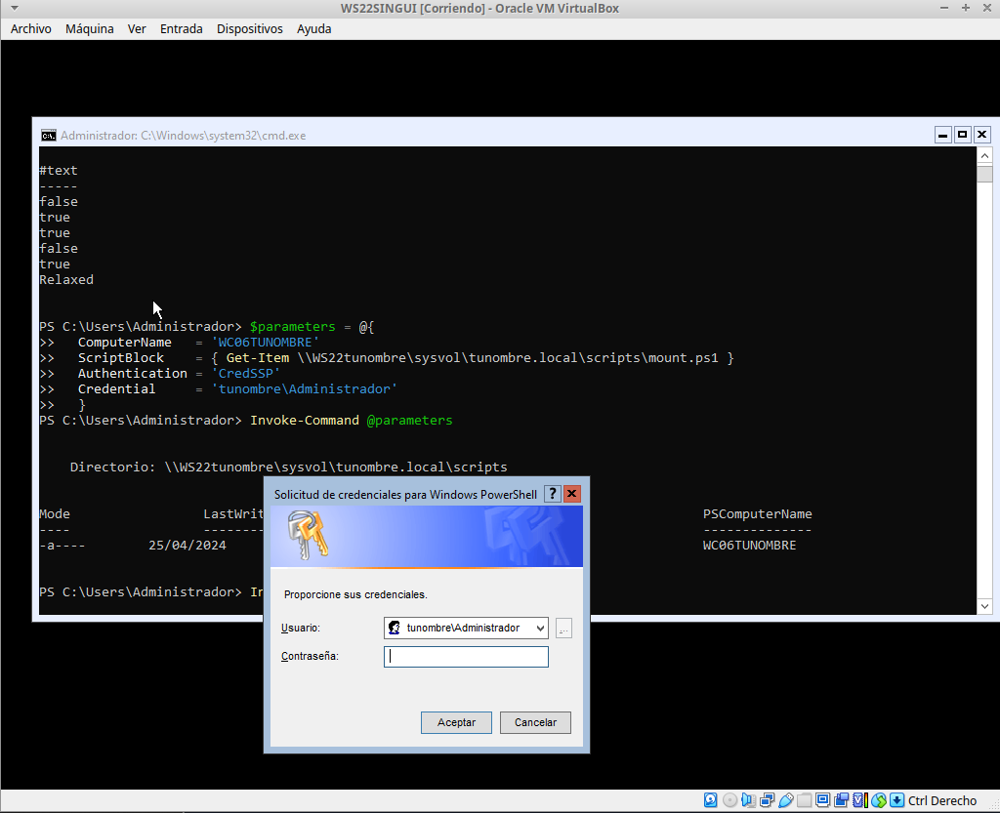

Casos prácticos : Active Directory sin GUI#
Crea los siguiente clones enlazados:
Clon enlazado 1 de «Windows Server 2022 sin GUI» llamado WS22tunombre con IP 10.4.X.Y/8 o DHCP si es portatil y un nuevo adaptador red para el servidor, le asignamos una red interna a la que ponemos la dirección 172.16.0.10/16
Clon enlazado 2 de «Windows Server 11» llamado WC05tunombre con un adaptador a una red interna, le asignamos la red 172.16.0.15/16 con puerta de enlace 172.16.0.10 y DNS 172.16.0.10
Clon enlazado 3 de «Windows Server 11» llamado WC06tunombre con un adaptador a una red interna, le asignamos la red 172.16.0.16/16 con puerta de enlace 172.16.0.10 y DNS 172.16.0.10
Puedes ver la configuración en el siguiente vídeo
Configurar servicio de enrutamiento#
# Instalar el servicio de enrutamiento
Install-WindowsFeature Routing -IncludeManagementTools
# habilitar NAT para la red interna
New-NetNat -Name "NAT" -InternalIPInterfaceAddressPrefix "172.16.0.10/16"
#habilitamos el reenvío de paquetes
Set-NetIPInterface -Forwarding Enabled
Instalación y configuración de Active Directory y DNS#
Instalamos el rol de Servicio de dominio de Active Directory
Install-WindowsFeature -Name AD-Domain-Services -IncludeManagementTools
Promocionamos el servidor como controlador de dominio
Import-Module ADDSDeployment
No tenemos creada ninguna parte de la infraestructura, comenzamos creando el bosque y se creará automáticamente el resto de la estructura
Install-ADDSForest
DomainName : tunombre.local
password : @lumn0
Puedes comprobar que se ha creado con el siguiente comando:
Get-ADComputer -Filter *
Unidades Organizativas, usuarios y grupos#
Vamos a crear las siguientes unidades organizativas:
New-ADOrganizationalUnit -DisplayName "DespachoX" -Name "DespachoX" -path "DC=tunombre,DC=local"
New-ADOrganizationalUnit -DisplayName "DespachoY" -Name "DespachoY" -path "DC=tunombre,DC=local"
Puedes comprobar las unidades creadas:
Get-ADOrganizationalUnit -LDAPFilter "(name=*)" | FT Name,DistinguishedName
En el caso de que te necesites borrar una OU, recuerda que primero tienes que deshabilitar el borrado accidental y luuego borrar
Set-ADOrganizationalUnit -Identity "OU=DespachoX,DC=tunombre,DC=local" -ProtectedFromAccidentalDeletion $False
Remove-ADOrganizationalUnit -Identity "OU=DespachoX,DC=tunombre,DC=local" -Recursive
Grupos y usuarios#
Vamos a crear los sigientes usuarios y grupos de seguridad
Grupo X
Usuario: tunombreX1 con la contraseña @lumn0X1, haz que sea miembro del grupo X
Usuario: tunombreX2 con la contraseña @lumn0X2, haz que sea miembro del grupo X
Grupo Y
Usuario: tunombreY1 con la contraseña @lumn0Y1, haz que sea miembro del grupo Y
Usuario: tunombreY2 con la contraseña @lumn0Y2, haz que sea miembro del grupo Y
New-ADGroup -DisplayName "X" -Name "X" -GroupScope DomainLocal -GroupCategory Security -Path "DC=tunombre,DC=local"
New-ADGroup -DisplayName "Y" -Name "Y" -GroupScope DomainLocal -GroupCategory Security -Path "DC=tunombre,DC=local"
Después creamos los usuarios, como se ve en el siguiente ejemplo con el usuario tu_nombreA1
New-ADUser -DisplayName "tunombreX1" -Name "tunombreX1" -UserPrincipalName "tunombreX1" -Enabled:$True -Path "DC=tunombre,DC=local" -AccountPassword (ConvertTo-SecureString -string "@lumn0X1" -AsPlainText -Force) -ChangePasswordAtLogon:$False
Al establecer -ChangePasswordAtLogon:$False, estás indicando que no se requiere que el usuario cambie la contraseña la primera vez que inicia sesión. Si lo queremos cambiar sobre un usuario ya creado Set-ADUser -Identity "tunombreX1" -ChangePasswordAtLogon $False, en el otro caso tendremos que iniciar la sesión al menos una vez para cambiar la contraseña y hasta que no lo hagamos no podremos loguearnos por ssh.
Por ultio lo añadimos al grupo
Add-ADGroupMember -Identity "X" -Members "tunombreX1"
Podemos comprobar que se han creado los grupos y los usuarios:
Get-ADGroupMember "X" | Select-Object Name
Get-ADGroupMember "Y" | Select-Object Name
En el caso de que queramos cambiar la directiva de las contraseñas, por ejemplo hacer que tengan un menor complejidad para hacer pruebas:
# Obtener la directiva de contraseñas actua
$pwdPolicy = Get-ADDefaultDomainPasswordPolicy
# Deshabilitar los requisitos de complejidad
Set-ADDefaultDomainPasswordPolicy -Identity (Get-ADDomain).DistinguishedName -ComplexityEnabled $false
# le damos la nueva contraseña
Set-ADAccountPassword -Identity tunombreX1 -NewPassword (ConvertTo-SecureString "1234" -AsPlainText -Force) -Reset
Unir equipo al dominio#
Para añadir el equipo al dominio WC05tunombre primero tendremos que cambiar el DNS y apuntar a Windows Server, luego en «Configuración/Sistema/Información/Dominio o grupo de trabajo» seleccionamos unir a dominio. En el caso de que el cliente no disponga de entorno gráfico:
#Comprobamos el DNS del cliente
Get-DnsClientServerAddress
#En el caso de que no apunte al servidor, lo cambiamos:
Set-DnsClientServerAddress -InterfaceIndex 6 -ServerAddresses ("172.16.0.10", "8.8.8.8")
Por ultimo lo metemos dentro del dominio con el siguiente comando que ejecutamos en el cliente, necesitaremos exportar el display para que aparezca el dialogo para meter la contraseña
Add-computer -domainname "tunombre.local" -Credential tunombre\administrador -restart -force
#puedes comprobar que se añadido en el servidor ejecuntando allí
Get-ADComputer -Filter * | FT Name
En el caso de que quieras hacerlo sin exportar el diplay:
$password = ConvertTo-SecureString "@lumn0" -AsPlainText -Force
$credenciales = New-Object System.Management.Automation.PSCredential("tunombre\administrador", $password)
Add-Computer -DomainName "tunombre.local" -Credential $credenciales -Restart -Force
Es posible que al clonar los equipos, puedan surgir problemas debido a que comparten el mismo SID. Para solucionarlo:
Si queremos sacar la maquina del dominio, en una terminal del servidor con permiso de administrador ejceutamos:
Remove-ADComputer -Identity "NombreDeLaComputadora"
En Windows, puedes utilizar el siguiente comando para sincronizar la hora con un servidor de tiempo en línea:
w32tm /resync
#darla a mano:
Set-Date -Date "lunes, 6 de mayo de 2024 9:27:57"
Carpeta compartida#
Creamos una carpeta en el servidor
C:\XY-TUNOMBRE
├───X-tunombre
└───Y-tunombre
y la compartimos:
New-SmbShare -Name "X" -Path "C:\XY-TUNOMRE\X-tunombre" -FullAccess "X", "Administradores"
Name ScopeName Path Description
---- --------- ---- -----------
X * C:\XY-TUNOMRE\X-tunombre
Podemos comprobar las carpetas que hay compartidas, ejecutando en el servidor:
net share
Para acceder a ellas:
#Podemos ver que esta en:
ls "\\WS22TUNOMBRE\X"
#Podmeos montar en el cliente en la unidad Z
New-PSDrive -Name "X" -PSProvider "FileSystem" -Root "\\WS22TUNOMBRE\X"
Utilizando el entorno gráfico
Para dejar de compartir la carpeta:
net share NombreRecurso /delete
Administración remota#
WinRM (Windows Remote Management) es un conjunto de servicios de administración remota que permite a los administradores de sistemas administrar y ejecutar comandos en sistemas Windows de forma remota, utiliza el protocolo WS-Management (WSMan) para establecer conexiones remotas y ejecutar comandos de manera segura.
Para permitir la administración remota del cliente, configuramos WinRM:
winrm quickconfig
Desde el servidor pordemos ejecutar comandos:
Invoke-Command -ComputerName WC05TUNOMBRE,WC06TUNOMBRE -ScriptBlock {HOSTNAME.EXE}
Invoke-Command se comunicará con hasta 32 equipos a la vez, si ponemos más comenzará hasta terminar los 32 primeros.
Si queremos abrir una sesisión
Enter-PSSession WC06TUNOMBRE
Exit-PSSession
También ofrece la opción de crear una conexión persistente «PSSession», en estas sesiones las re-conexiones son mucho más rápidas y se conservará el estado, para ello llamada PSSession con (New-PSSession) en lugar de usar -ComputerName con Enter-PSSession o Invoke-Command, utilizaremos su parámetro -Session y pasaremos un objeto PSSession existente y abierto. Esto permite a los comandos volver a utilizar la conexión persistente que se había creado anteriormente.
# Crear una nueva sesión remota
$session = New-PSSession -ComputerName WC06TUNOMBRE
# Ejecutar un comando en la sesión remota
Invoke-Command -Session $session -ScriptBlock { Get-PSSessionConfiguration }
# Habilitar la ejecución de scripts en los equipos
Invoke-Command -Session $session -ScriptBlock { Set-ExecutionPolicy Unrestricted }
# Podemos instalar el servidor ssh de forma remota:
Invoke-Command -Session $session -ScriptBlock { Add-WindowsCapability -Online -Name $(Get-WindowsCapability -Online | Where-Object Name -like 'OpenSSH.server*' | Select-Object Name| Select-Object -Index 0) }
Invoke-Command -Session $session -ScriptBlock { Get-Service sshd }
Cuando se utilizan sesiones persistentes, por otro lado, las re-conexiones son mucho más rápidas, y puesto que se están manteniendo y reutilizando las sesiones, se conservará el estado.
Invoke-Command -Session $session -ScriptBlock { $a = 1 }
Invoke-Command -Session $session -ScriptBlock { echo $a }
1
Podemos cargar un script:
$scriptBlock = {
echo "hola $(whoami.exe)"
echo "hoy es $(date)"
}
Invoke-Command -Session $session -ScriptBlock $scriptBlock
También podemos cargarlo de un archivo, para editar el script lo podemos hacer directamente con el editor vim utilizando una conexión por ssh
PS C:\Users\Administrador> cat script.ps1
echo "hola $(whoami.exe)"
echo "hoy es $(date)"
PS C:\Users\Administrador> Invoke-Command -FilePath script.ps1 -Session $session
hola tunombre\administrador
hoy es 05/06/2024 10:52:12
Para tener acceso a un recurso compartido de red en una sesión remota. utilizamos Enable-WSManCredSSP, sirve para habilitar el delegado de credenciales de CredSSP (Credential Security Support Provider) en el servidor de administración remota y en el cliente.
Enable-WSManCredSSP -Role client -DelegateComputer WC06TUNOMBRE
# usamos la $session creada
Invoke-Command -Session $session -ScriptBlock { Enable-WSManCredSSP -Role Server -Force }
$parameters = @{
ComputerName = 'WC06TUNOMBRE'
ScriptBlock = { Get-Item \\WS22tunombre\sysvol\tunombre.local\scripts\mount.ps1 }
Authentication = 'CredSSP'
Credential = 'tunombre\Administrador'
}
Invoke-Command @parameters
Ten encuenta que necesitaras acceso al entorno gráfico:
De esta forma podemos instalar programas que se ecuentren en una carpeta compartida
Invoke-Command -Credential tunombre\Administrador -ComputerName WC06TUNOMBRE -Authentication CredSSP -ScriptBlock {Start-Process msiexec.exe -ArgumentList "/i \\WS22tunombre\sysvol\tunombre.local\vlc-3.0.20-win64.msi /qn" -Wait}
Sería lo mismo que:
$parameters = @{
Credential = 'tunombre\Administrador'
ComputerName = 'WC06TUNOMBRE'
Authentication = 'CredSSP'
ScriptBlock = {
param($dirmsi)
Start-Process msiexec.exe -ArgumentList "/i $dirmsi /qn" -Wait
}
ArgumentList = '\\WS22tunombre\sysvol\tunombre.local\vlc-3.0.20-win64.msi'
}
Invoke-Command @parameters
Mapear unidades de red a las carpetas compartidas#
cat \\WS22tunombre\sysvol\tunombre.local\scripts\mount.ps1
New-PSDrive -Name "X" -PSProvider "FileSystem" -Root "\\WS22TUNOMBRE\X"
En el caso que queramos que el cambio sea permanente:
New-PSDrive -Persist -Name "X" -PSProvider "FileSystem" -Root "\\WS22TUNOMBRE\X" -Scope Global
Mover objetos entre las diferentes unidades organizativas#
Vamos a mover un equipo de Computers a DespachoX, primero vemos los clientes que tenemos:
Get-ADComputer -Filter * | Select-Object Name, DistinguishedName
#Nuestro cliente esta en:
Get-ADComputer -Filter {Name -eq "WC06TUNOMBRE"} | FT DistinguishedName
Vemos las siguientes unidades organizativas:
#Tenemos las siguientes unidades organizativas
Get-ADOrganizationalUnit -Filter * -SearchBase "DC=tunombre,DC=local" | FT DistinguishedName
Movemos el equipo al «DespachoX»
$IdentidadEquipo = $(Get-ADComputer -Identity "WC06TUNOMBRE").DistinguishedName
Move-ADObject -Identity $IdentidadEquipo -TargetPath "OU=DespachoX,DC=tunombre,DC=local" -Confirm:$False
Crear y vinculamos GPO#
Creamos la politica de grupo:
New-GPO -Name "MapearX"
Asignar la configuración de inicio de sesión a la GPO
$parameters = @{
Name = 'MapearX'
Key = "HKEY_LOCAL_MACHINE\SOFTWARE\Microsoft\Windows\CurrentVersion\Run"
ValueName = "ScriptName"
Type = "String"
Value = "\\WS22tunombre\sysvol\tunombre.local\scripts\mount.ps1"
}
Set-GPRegistryValue @parameters
La vinculamos:
Get-GPO -Name "MapearX" | New-GPLink -Target "OU=DespachoX,DC=tunombre,DC=local"
Si queremos desvincular:
Remove-GPLink -Name <Nombre> -Target <Path_OU_Dominio>
Borrarla:
Remove-GPO -Name <Nombre> -Domain <dominio>
Gestión de ACL sin entorno gráfico#
Access Control List o «Lista de Control de Acceso» es utilizado para definir y controlar los permisos de acceso a recursos, como archivos, carpetas, impresoras y otros objetos en un sistema informáticos, con el comando Get-Acl podemos obtener la ACL de una archivo o carpeta.
PS C:\Users> Get-Acl A
Path Owner Access
---- ----- ------
A BUILTIN\Administradores NT AUTHORITY\SYSTEM Allow FullControl...
PS C:\Users> $(Get-Acl A).Owner
BUILTIN\Administradores
PS C:\Users> $(Get-Acl A).Group
WC22TUNOMBRE\Ninguno
Con el comando icacls puedes administrar las Listas de Control de Acceso (ACLs) en archivos y carpetas.
#Cambiar permisos en un archivo o carpeta:
PS C:\Users> icacls A /grant "wc22tunombre\tu_nombrea1:(OI)(CI)RW"
PS C:\Users> Get-Acl A
Path Owner Access
---- ----- ------
A BUILTIN\Administradores WC22TUNOMBRE\tu_nombreA1 Allow Write, Read, Synchronize...
#le hemos dado permisos de RW al usuario tu_nombreA1
#Para cambiar propietario
icacls A /setowner "wc22tunombre\tu_nombrea1"
Ejemplo de como dar permisos de RW a un grupo completo:
$permissions = "Read", "Write"
$acl = Get-Acl -Path A
# Crear una regla de acceso para el grupo A
$accessRule = New-Object System.Security.AccessControl.FileSystemAccessRule("A", $permissions, "ContainerInherit, ObjectInherit", "None", "Allow")
$acl.SetAccessRule($accessRule)
Set-Acl -Path A -AclObject $acl
Otro ejemplo, vamos a crear una carpeta llamada “XY”, dentro dos subcarpetas llamadas “X” y “Y”. Definiremos los permisos para que solo el grupo “X” tenga acceso de entrada a la carpeta “X” dentro de “XY”.»
Creamos las carpetas:
rm -r C:\Users\XY
mkdir C:\Users\XY
mkdir C:\Users\XY\X
mkdir C:\Users\XY\Y
Obtenemos el objeto ACL actual de la carpeta XY
$acl= Get-Acl -Path "C:\Users\XY"
Damos permisos para la carpeta principal (lectura y escritura)
$permisos= "ReadAndExecute", "ListDirectory"
Crear la regla de acceso para el grupo X
$reglaX = New-Object System.Security.AccessControl.FileSystemAccessRule("X",$permisos, "Allow")
$reglaY = New-Object System.Security.AccessControl.FileSystemAccessRule("Y",$permisos, "Allow")
Agregamos las reglas de acceso a la carpeta «XY»
$acl.AddAccessRule($reglaX)
$acl.AddAccessRule($reglaY)
Set-Acl -Path "C:\Users\XY" -AclObject $acl
Agregamos permisos para para la carpeta «X» pueda ser modificada por el grupo «X»
cd C:\Users\XY
$acl= Get-Acl -Path "C:\Users\XY\X"
$permisos = "Modify"
$regla = New-Object System.Security.AccessControl.FileSystemAccessRule("X",$permisos, "Allow")
$acl.AddAccessRule($regla)
Set-Acl -Path "C:\Users\XY\X" -AclObject $acl
Agregamos permisos para para la carpeta «Y» pueda ser modificada por el grupo «Y»
$acl= Get-Acl -Path "C:\Users\XY\Y"
$permisos = "Modify"
$regla = New-Object System.Security.AccessControl.FileSystemAccessRule("Y",$permisos, "Allow")
$acl.AddAccessRule($regla)
Set-Acl -Path "C:\Users\XY\Y" -AclObject $acl